- Introduction
- Preliminary Setup
- AnyPoint Studio Project - Atina JDE Connector
- Using the Connector
- Creating a new Mule Project
- Project Dependencies
- Repository Configuration
- Dependency Declaration
- Other Considerations
- Troubleshooting
- Configure the Global Element
- Invoking a JDE Web Services
- Invoking a Business Function (BSFN)
- Invoking a Business Function (BSFN) with Transaction Processing
- Submit an UBE and an UBE State
- Capture MBF Outbound Events
- Capture MBF Outbound Events
- Atina JDE Connector_ – Demo Applications
- Appendix A : Additional Information
- Appendix B: JDE Configuration
Introduction
This document provides a comprehensive guide to the MuleSoft Connector for Atina JDE Microservices. It is intended for integration developers and system architects responsible for configuring, deploying, and maintaining integrations between MuleSoft™ and Oracle JD Edwards EnterpriseOne™ using Atina’s microservice-based architecture.
Unlike traditional approaches that rely on legacy libraries or complex setups, this connector simplifies the interaction with JD Edwards by leveraging a modern, containerized middleware that exposes a gRPC-based API. The connector encapsulates the complexity of JD Edwards integration and allows Mule applications to seamlessly: After reading this guide, you should be able to accomplish the following scenarios:
-
Log into JD Edwards EnterpriseOne™
-
Invoke Web Services (WS) on the server by passing it parameters.
-
Invoke a Business Function (BSFN) on the server by passing it parameters.
-
Invoke a Business Function (BSFN) on the server using Transaction Processing.
-
Invoke a UBE by name.
-
Check a UBE call’s status asynchronously.
-
MBF Poll Events.
-
Log out.
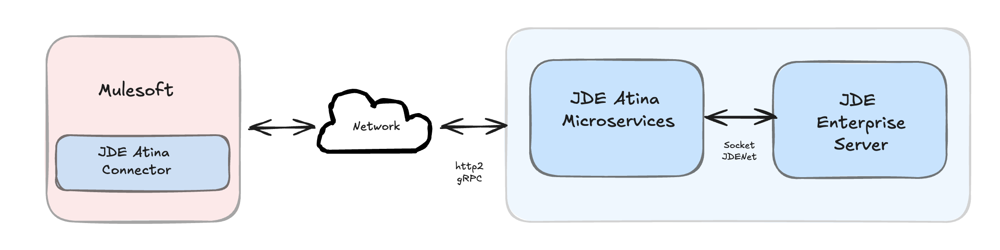
At design time, the JDE Atina Connector allows you to discover BSFN functions, Web Services by name providing full access to all Business Function and Web Services signatures. Given that discovery is a heavy duty process, the Connector manages a cache repository for all function’s metadata used at least once.
The results of a function call will be injected into the flow as a Map containing key-value pairs with the invocation’s output values. This approach gives the end user freedom of choice to construct complex flows and manage custom exception strategies.
Prerequisites
This document assumes that the reader has prior knowledge and access to the following technologies and tools:
-
Basic understanding of JD Edwards EnterpriseOne™ concepts (e.g., BSFNs, UBEs, orchestration, data structures).
-
Familiarity with MuleSoft development, particularly using Anypoint Studio for building and deploying integration flows.
Requirements
-
Mule 4.6 Server Runtime or higher
-
Java JDK 1.8, 11 or 17
-
Maven 3.9.6 or higher (do not use the embedded Maven for AnyPoint Studio)
-
Atina JDE Microservices: The connector requires access to the Atina JDE Microservices deployed in the target network. Ensure the service is reachable (credentials provided).
See the Atina JDE Microservices Manual for detailed setup and deployment instructions.
Preliminary Setup
Before using the Atina JDE Connector in your MuleSoft projects, some initial configuration is required.
This includes configuring your Maven settings to access the private repository, and installing the license required by the connector.
Preparing Maven for Atina JDE Connector
-
To download the connector and its dependencies, you must add credentials to your Maven settings.xml file (typically located at ~/.m2/settings.xml)
-
Locate or create the <servers> section inside the file.
-
Add the following entry, replacing youruser and yourpassword with the credentials provided by Atina:
-
<server>
<id>atina-central</id>
<username>youruser</username>
<password>yourpassword</password>
</server>Adding Atina JDE license to your Mule runtime
The Atina JDE Connector requires a valid license file. You can provide the license in one of the following ways:
-
Place the license file in your project folder under src/main/resources.
-
Or, copy the license file to the Mule installation directory under MULE_HOME/conf.
AnyPoint Studio Project - Atina JDE Connector
|
Note
|
It is recommended that you update AnyPoint Studio before starting with a Atina JDE Connector project. |
Using the Connector
You can use the connector to
-
Log into JD Edwards EnterpriseOne™
-
Invoke Web Services (WS) on the server by passing it parameters.
-
Invoke a Business Function (BSFN) on the server by passing it parameters.
-
Invoke a Business Function (BSFN) on the server using Transaction Processing.
-
Invoke a UBE by name.
-
Check a UBE call’s status asynchronously.
-
MBF Poll Events.
-
Log out.
Creating a new Mule Project
Create a new Mule Project with Mule Server 4.6.0 EE or greater as runtime:
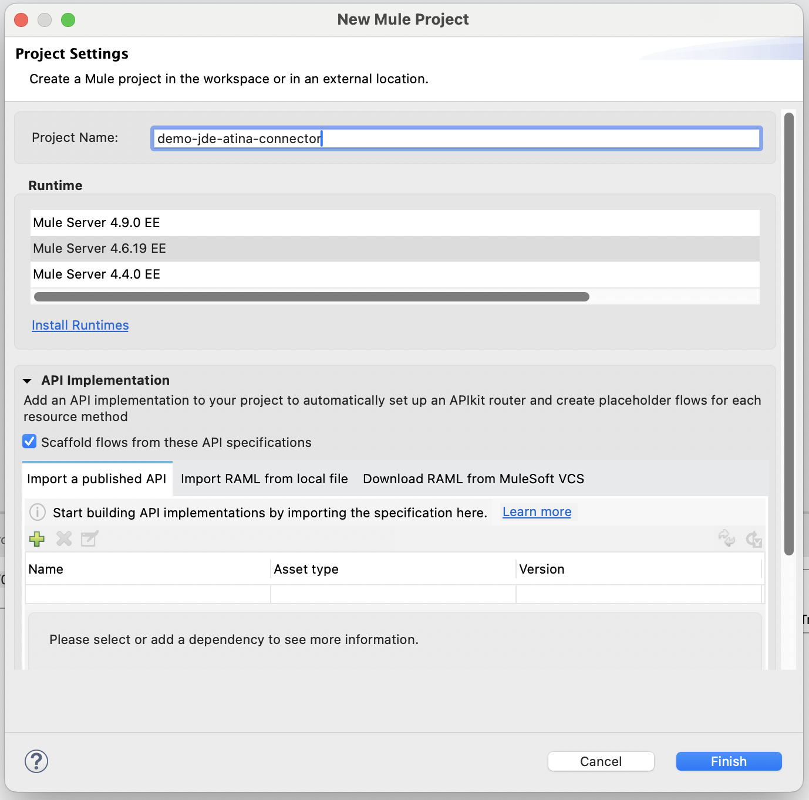
Project Dependencies
To include the Atina JDE Connector in your Mule application, update your pom.xml file with the following configuration:
Repository Configuration
Add the Atina Repository to the <repositories> section:
<repository>
<id>atina-central</id>
<name>libs-release</name>
<url>https://jfrog.atina-connection.com/artifactory/libs-release</url>
</repository>Dependency Declaration
Then, include the connector dependency in the <dependencies> section:
<dependency>
<groupId>com.atina-connection</groupId>
<artifactId>mule-jde-atina-connector</artifactId>
<version>1.0.0</version>
<classifier>mule-plugin</classifier>
</dependency>|
Note
|
Make sure to replace the version number with the latest available release if a newer one exists. |
Other Considerations
To redirect the JD Edwards EntrpriseOne™ Logger to Mule Logger (allowing you to see the JDE activity in both Console and JDE files defined in the jdelog.properties, you may add the following Async Loggers to log4j2.xml file.
<AsyncLogger name="org.mule.modules.jde=" level="DEBUG" />Troubleshooting
If you are experiencing issues resolving all project dependencies, follow these steps:
-
Close Anypoint Studio completely.
-
From the project root directory, run the following command in your terminal or command prompt:
mvn clean package|
Note
|
This process ensures that Maven updates the local cache and properly indexes the project upon reopening. |
Additional Tips
If the issue persists:
-
Force Maven to update all snapshots and releases:
mvn clean package -U-
Delete the local repository cache (⚠️ this will require re-downloading all dependencies):
rm -rf ~/.m2/repository-
After clearing the cache, rerun the build:
mvn clean package-
Reopen Anypoint Studio and verify that all dependencies are now resolved.
Configure the Global Element
To use the Atina JDE Connector in your Mule application, you must first define a global configuration element. This element provides the connection details required to interact with JD Edwards EnterpriseOne™ through the connector.
Follow these steps:
-
Create a ne Mule flow file (e.g., demo-jde-config.xml.xml).
-
Open this new Mule flow file.
-
Click the Global Elements tab located at the bottom of the editor window.
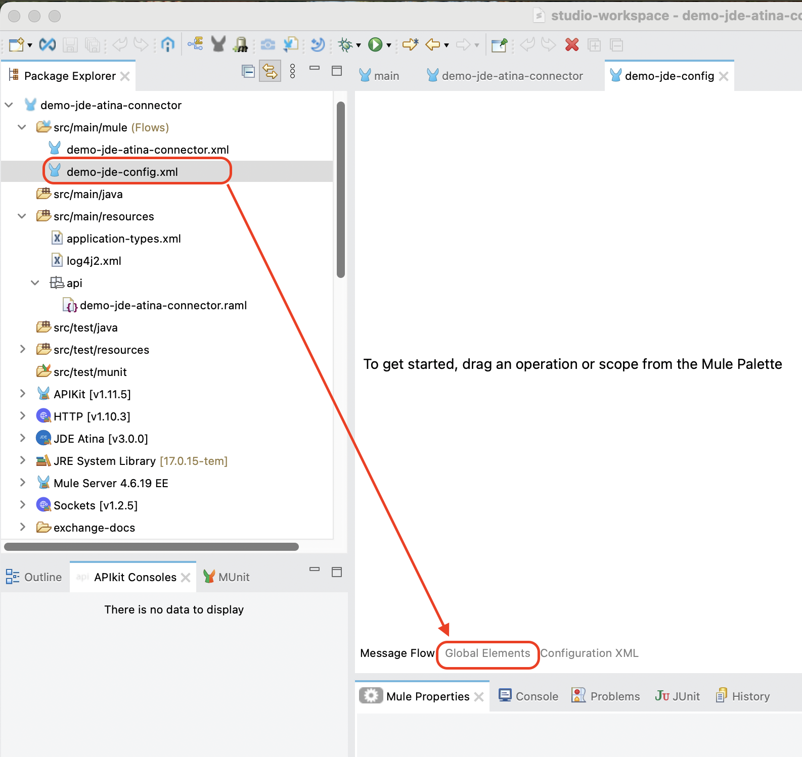
-
Click the Create button.
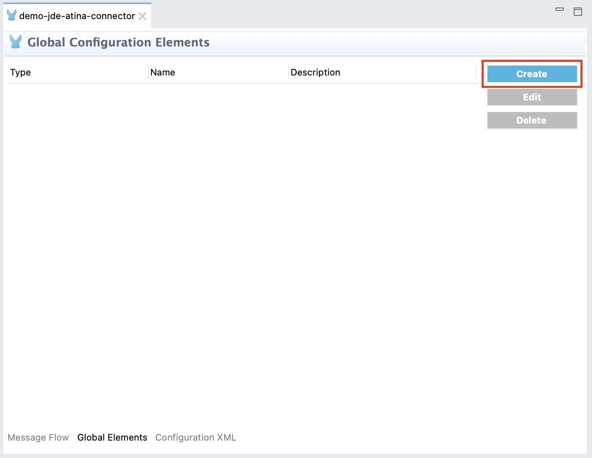
-
In the dialog that appears, type JDE in the search box or navigate to Connector Configuration and select JDE Atina Config. Then click OK.
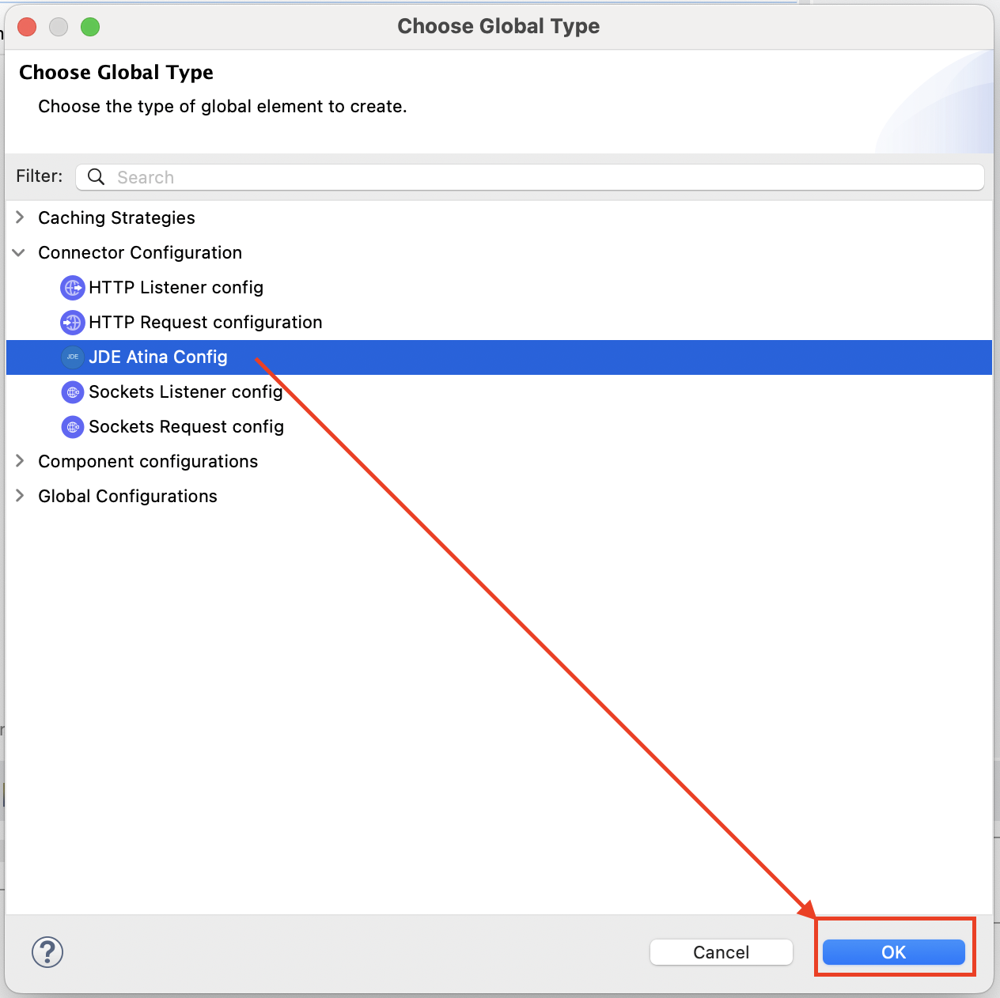
-
Fill in the required fields under the General tab:
-
User: JDE user account (e.g., JDE)
-
Password: Password for the JDE user
-
Environment: JDE environment (e.g., JDVE920)
-
Role: JDE role (e.g., *ALL)
-
WS Connection: Set to True if you will invoke Web Services; otherwise, set to False for BSFN, UBE operations or Poll Events.
-
Microservice Name or IP: IP address or hostname of the JD Atina Microservice
-
Microservice Port: Port used by the microservice
-
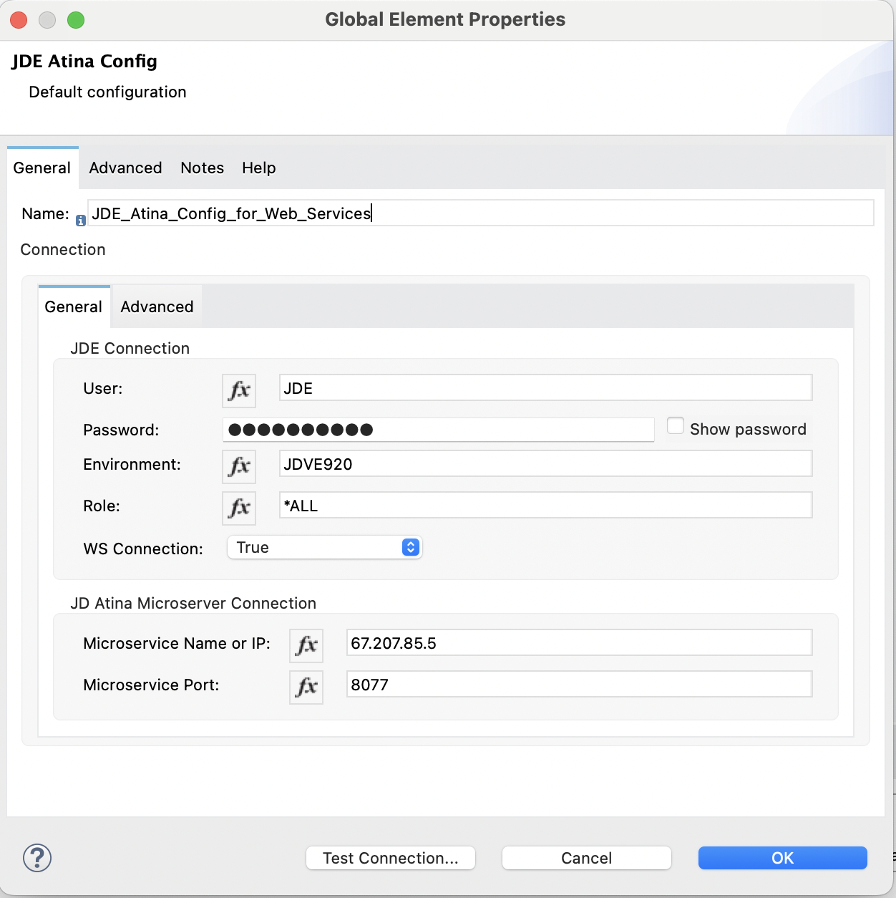
-
Click Test Connection to verify that the connector can successfully reach the microservice and validate the credentials.
If successful, you will see the following confirmation message:
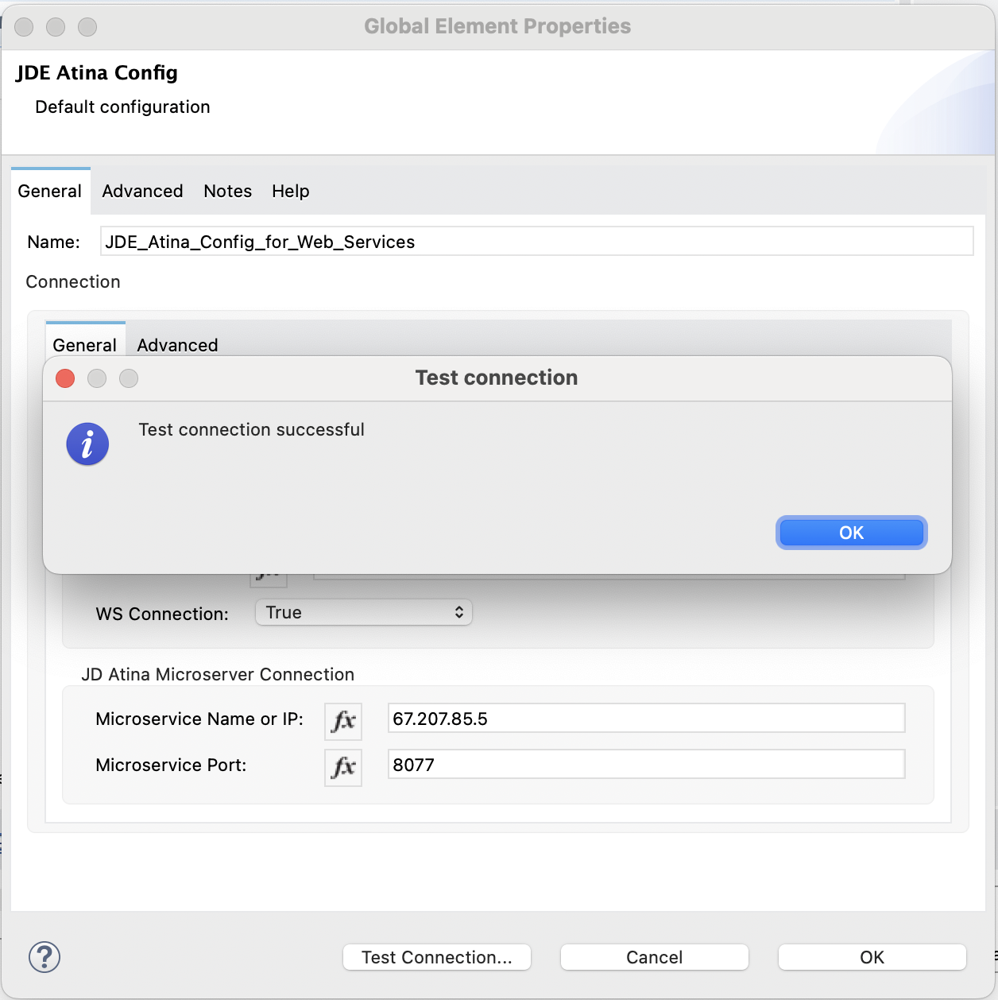
Once confirmed, click OK to save the global configuration.
Optional: Create a Second Configuration for Non Web Services Operations
If you also plan to execute non-Web Service operations (such as BSFN, UBE Execution, or MBF Events) using the same connector, you must create an additional global configuration where the WS Connection field is set to False.
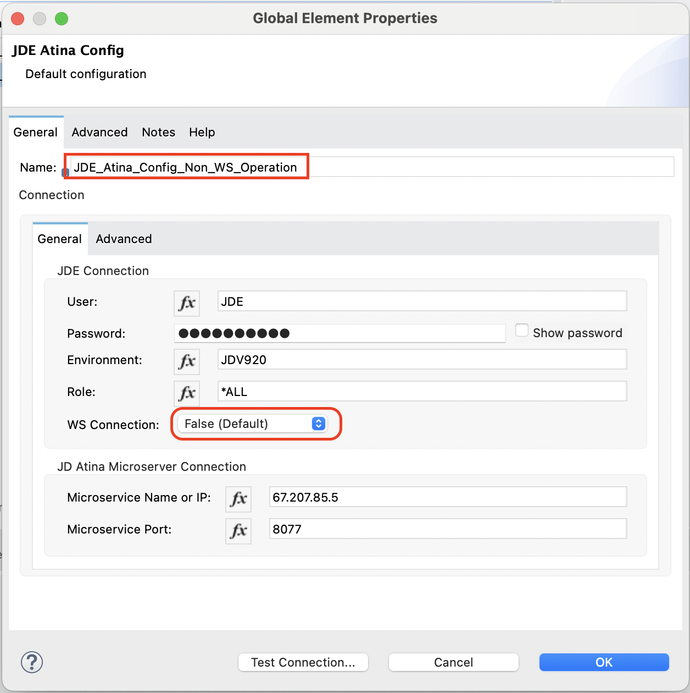
To do this:
-
Repeat the steps above to create a new configuration.
-
Choose a different name for the global element (e.g., JDE_Atina_Config_for_BSFN).
-
Set WS Connection to False.
-
Keep the remaining connection values consistent with your environment.
This approach allows you to define and use multiple configurations within the same project, referencing the appropriate one depending on the type of operation.
Invoking a JDE Web Services
From the following RAML definition, we will build an endpoint that invokes the JDE Web Service oracle.e1.bssv.JP010000.AddressBookManager.getAddressBook.
RAML Definition
#%RAML 1.0
title: ATINA JDE Connector
version: v1
/v1:
/getAdressBookUsingWS:
get:
description: >
Get Address Book using Web Service
JP010000 AddressBookManager method getAddressBook.
queryParameters:
entityID:
displayName: Address Book No
type: string
required: true
responses:
200:
description: OK
body:
application/json:
example: |
{
}Based on this RAML, the following endpoint will be exposed:
GET /v1/getAdressBookUsingWS?entityID=28Creating a HTTP Listener from RAML
This section explains how to generate a fully configured HTTP Listener and the corresponding flows in Anypoint Studio, using a RAML file stored in your project’s src/main/resources folder.
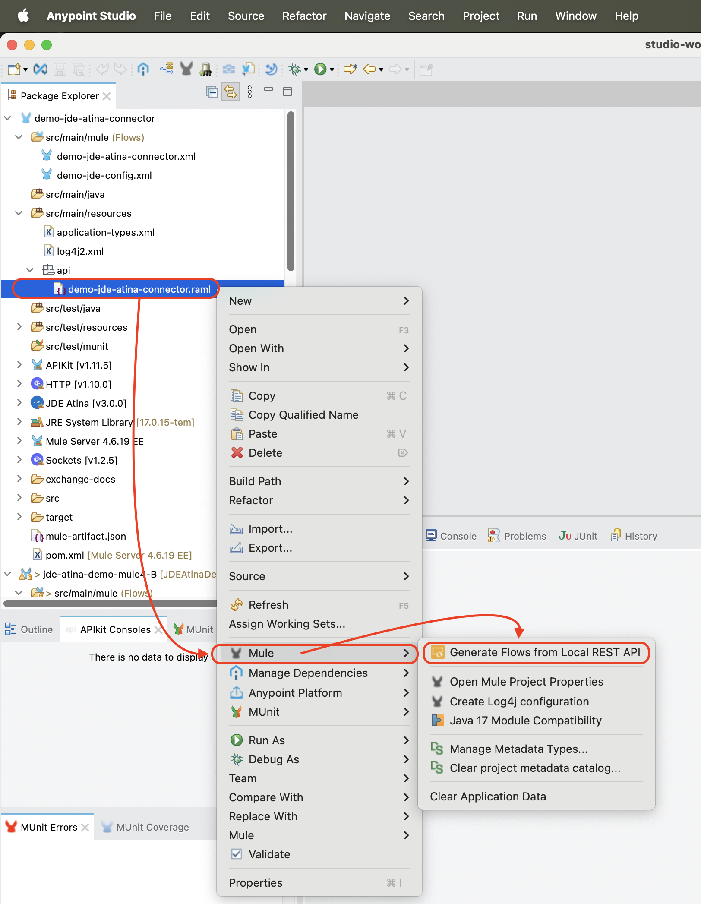
-
Create the file
demo-jde-atina-connector.ramlunder the directorysrc/main/resources/apior a similar path. -
Paste the RAML definition described in the previous section into this file.
-
Right-click on the RAML file and select:
Mule → Generate Flows from Local REST API…
This option will automatically:
-
Parse the RAML structure.
-
Generate a set of flows corresponding to each HTTP method and resource.
-
Create a global HTTP Listener Configuration if one does not already exist.
Inside this file, write the previous RAML Definition.
Right-click the RAML file and navigate to:
Mule → Generate Flows from Local REST API…
Once the generation is complete:
-
A flow will be created for each RAML endpoint.
-
A listener will be configured to expose them on the specified base path and port.
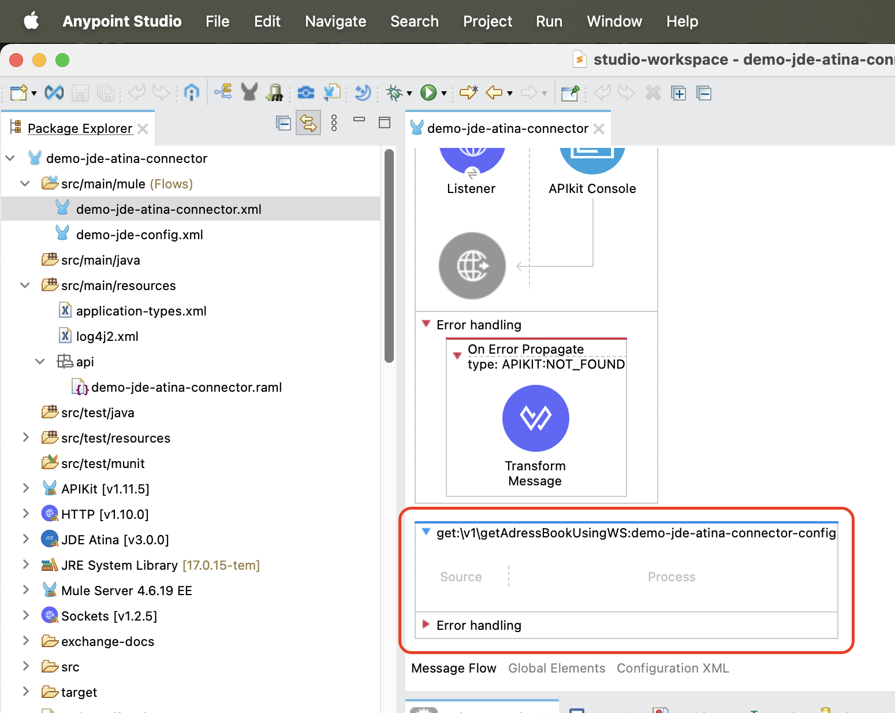
|
Note
|
This method provides a quick and consistent way to align your Mule flows with the API contract defined in the RAML. All examples in this manual are generated using this approach. |
Invoke Web Service operation
To invoke a JDE Web Service using the Atina JDE Connector, follow the steps below:
1. Add the Connector to the Flow
From the Mule Palette, locate the JDE Atina module and drag the Invoke ws operation onto the flow canvas.
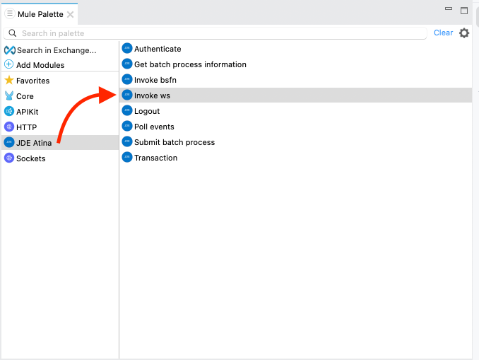
From the Mule Palette (typically top right), Locate the Atina JDE Connector, and select Invoke ws.
Once the operation is placed, select it and review the configuration panel on the right.
-
Change the Display Name to something meaningful, such as
Invoke WS Address Book Manager. -
In the Basic Settings, select the appropriate connector configuration (e.g.
JDE_Atina_Config_for_Web_Services).
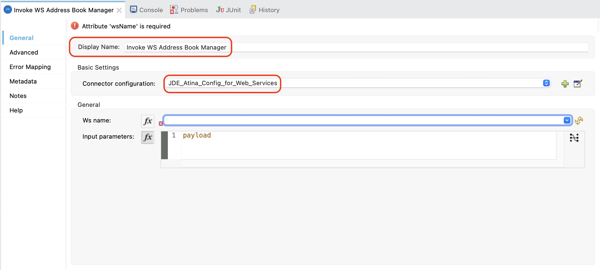
2. Select the Web Service to Invoke
Under the General section, locate the field labeled Ws name. Click the dropdown icon to retrieve the available Web Services from the microserver.
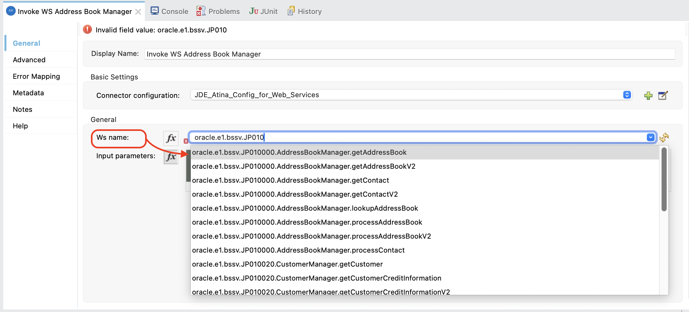
From the list, choose: oracle.e1.bssv.JP010000.AddressBookManager.getAddressBook
This metadata is fetched directly from the running microserver instance and stored in your project metadata.
3. Set the Input Parameters
You can now configure the input parameters using DataWeave or the graphical mapping interface.
Click the fx icon next to Input parameters, and use either:
-
Manual expression:
{ entity: { entityId: attributes.queryParams.entityID as Number } } -
Or graphical mapping: drag
attributes.queryParams.entityIDtoentity.entityId.
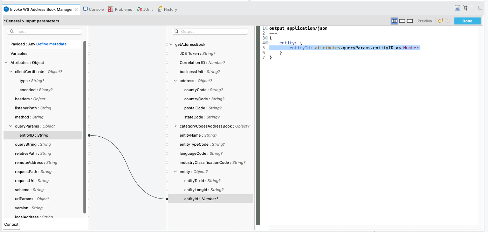
4. Add a Transform Message (Optional)
After the WS invocation, you can format the response.
From the Mule Palette, search for Transform Message and drag it next to the connector.
This will allow you to format the output as needed, such as converting it to application/json.
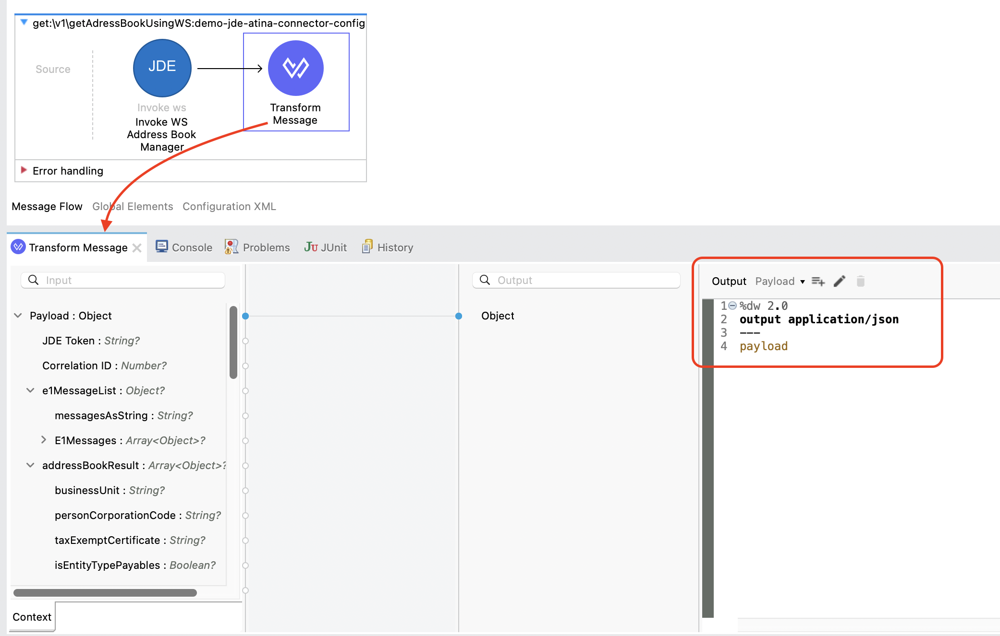
Typical output for passthrough:
%dw 2.0
output application/json
---
payload5. Run and Test the Flow
Start your Mule application using the Run button or Run → Run Project.
Once deployed, you can test the endpoint using the API Console or an HTTP client such as curl or Postman.
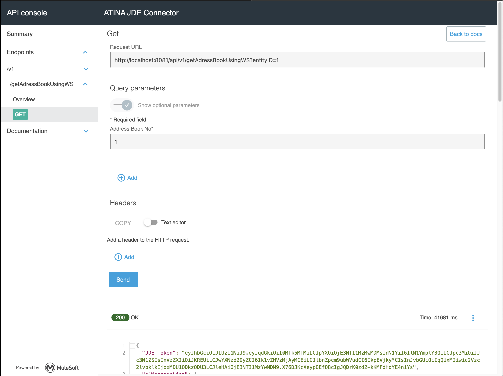
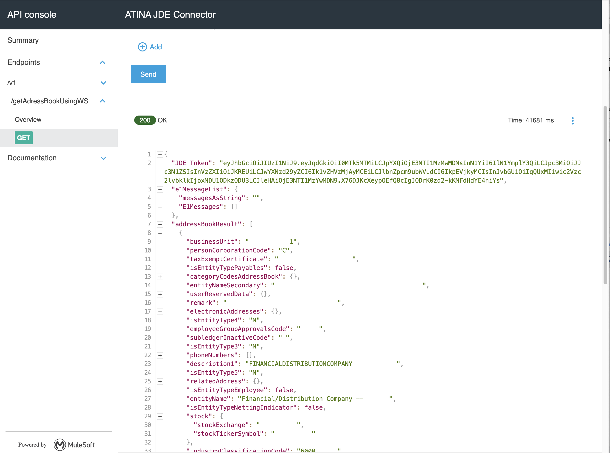
You should receive a 200 OK response with the addressBookResult in JSON format.
|
Note
|
The WS operation is executed dynamically by the microservice. If the service is not available or misconfigured, you will receive a |
Invoking a Business Function (BSFN)
Just as we did with Web Services, we start from a RAML contract and generate a Mule endpoint that calls a JDE Business Function (BSFN).
In this example we invoke AddressBookMasterMBF to retrieve Address Book information.
RAML Definition
#%RAML 1.0
title: ATINA JDE Connector
version: v1
/v1:
...
/getAdressBookUsingBSFN:
get:
description: Get Address Book using BSFN AddressBookMasterMBF .
queryParameters:
entityID:
displayName: Address Book No
type: string
required: true
responses:
200:
description: OK
body:
application/json:
example: |
{
}Based on this RAML, the following endpoint will be exposed:
GET /v1/getAdressBookUsingBSFN?entityID=28Configure the BSFN Invocation
To invoke the BSFN in your Mule flow, follow the same initial steps explained in the section Creating a HTTP Listener from RAML.
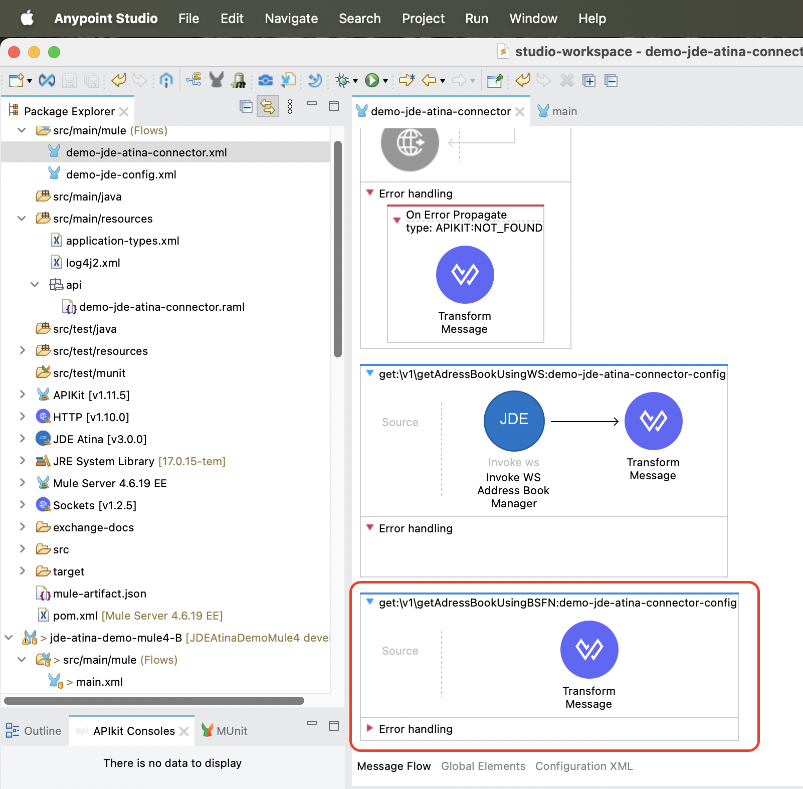
To invoke a JDE BSFN using the Atina JDE Connector, follow the steps below:
1. Add the Connector to the Flow
From the Mule Palette, locate the JDE Atina module and drag the Invoke bsfn operation onto the flow canvas.
Once the operation is placed, select it and review the configuration panel on the right.
-
Change the Display Name to something meaningful, such as
Invoke BSFN MBSFN Address Book. -
In the Basic Settings, select the appropriate connector configuration (e.g.
JDE_Atina_Config_Non_WS_Operation).
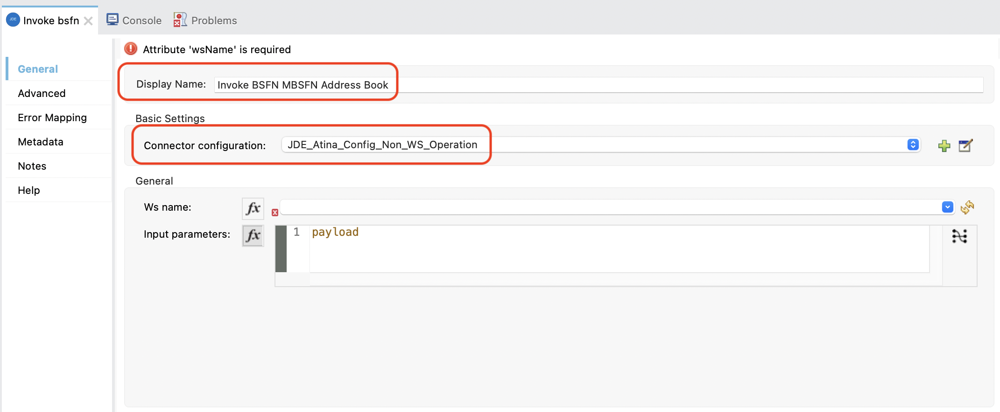
2. Select the BSFN to Invoke
Under the General section, locate the field labeled Ws name. Click the dropdown icon to retrieve the available BSFN from the microserver.
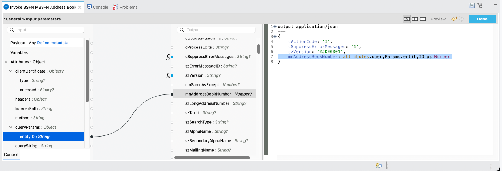
From the list, choose: AddressBookMasterMBF
This metadata is fetched directly from the running microserver instance and stored in your project metadata.
3. Set the Input Parameters
You can now configure the input parameters using DataWeave or the graphical mapping interface.
Click the fx icon next to Input parameters, and use either:
-
Manual expression:
{ cActionCode: 'I', cSuppressErrorMessages: '1', szVersion: 'ZJDE0001', mnAddressBookNumber: attributes.queryParams.entityID as Number } -
Or graphical mapping: drag
attributes.queryParams.entityIDtomnAddressBookNumber.
4. Add a Transform Message (Optional)
After the WS invocation, you can format the response.
From the Mule Palette, search for Transform Message and drag it next to the connector.
This will allow you to format the output as needed, such as converting it to application/json.
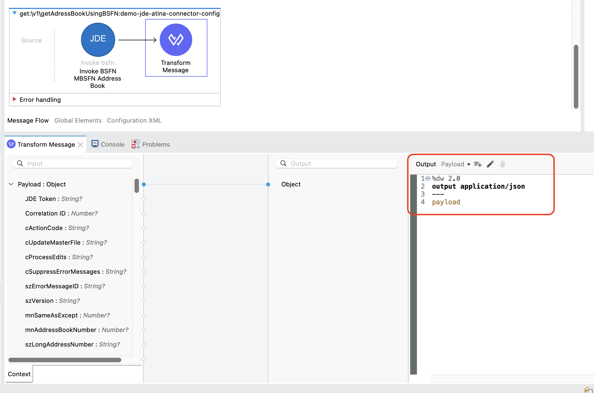
Typical output for passthrough:
%dw 2.0
output application/json
---
payload5. Run and Test the Flow
Start your Mule application using the Run button or Run → Run Project.
Once deployed, you can test the endpoint using the API Console or an HTTP client such as curl or Postman.
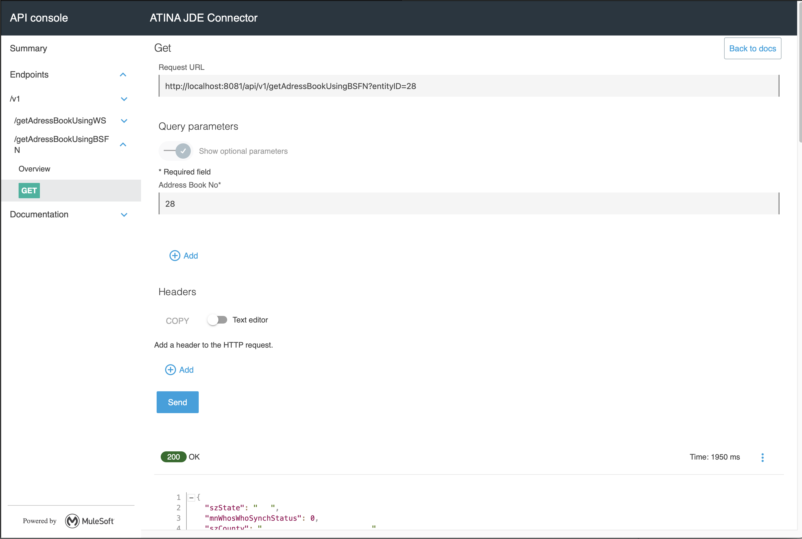
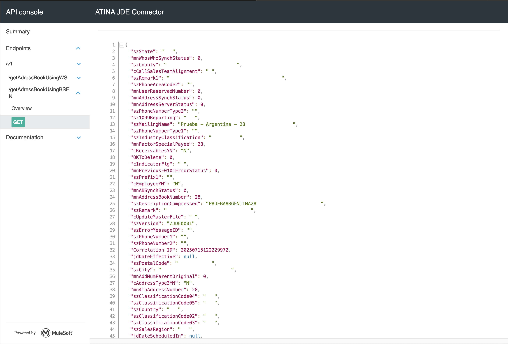
You should receive a 200 OK response with the JSON format.
|
Note
|
The BSFN operation is executed dynamically by the microservice. If the service is not available or misconfigured, you will receive a |
Invoking a Business Function (BSFN) with Transaction Processing
This use case example will reuse the previous flow to add a Customer. In this case, we will need to invoke two Master Business Function (MBF) on Oracle’s JDE EnterpriseOne Server in the same transaction.
Just as we did with BSFN, we start from a RAML contract and generate a Mule endpoint that create a Customer using BSFN.
In this example we add MBFCustomerMaster to create Address Book and Customer information.
RAML Definition
#%RAML 1.0
title: ATINA JDE Connector
version: v1
/v1:
...
/createCustomerUsingBSFNs:
post:
description: Create Customer using BSFN AddressBookMasterMBF and MBFCustomerMaster.
body:
application/json:
type: |
{
"type": "object",
"properties": {
"customerName": {
"type": "string",
"displayName": "Customer Name"
},
"customerAddress": {
"type": "string",
"displayName": "Customer Address"
},
"customerCity": {
"type": "string",
"displayName": "Customer Address"
},
"customerState": {
"type": "string",
"displayName": "Customer Address"
},
"paymentCurrency": {
"type": "string",
"displayName": "Payment Currency",
"pattern": "^[A-Z]{3}$",
"description": "3-letter currency code (e.g., USD, EUR, ARS)"
}
}
}
example: |
{
"customerName": "John Doe",
"customerAddress": "123 Main St",
"customerCity": "Denver",
"customerState": "CO",
"paymentCurrency": "USD"
}
responses:
200:
description: OK
body:
application/json:
example: |
{
"status": "Customer created successfully",
"customerId": "12345"
}Based on this RAML, the following endpoint will be exposed:
POST /v1/createCustomerUsingBSFNs
{
"customerName": "John Doe",
"customerAddress": "123 Main St",
"customerCity": "Denver",
"customerState": "CO",
"paymentCurrency": "USD"
}Configure the BSFN Create Customer Invocation
To invoke the BSFN in your Mule flow, follow the same initial steps explained in the section Creating a HTTP Listener from RAML.
To invoke a JDE BSFN using the Atina JDE Connector, follow the steps below:
1. Add the Two BSFN Connector to the Flow
Add the two BSFN
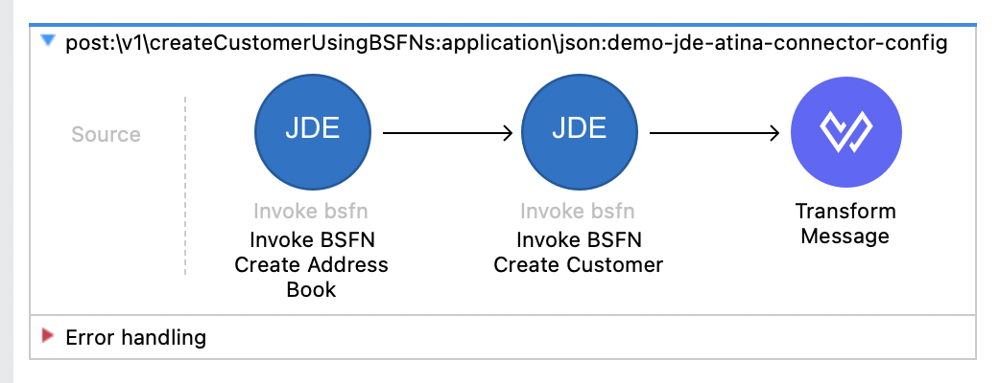
Invoke BSFN Create Address Book
<jdeatina:invoke-bsfn wsName="AddressBookMasterMBF" doc:name="Invoke BSFN Create Address Book" config-ref="JDE_Atina_Config_Non_WS_Operation" target="addressBookRecord">
<jdeatina:input-parameters><![CDATA[#[output application/json
---
{
cActionCode: 'A',
cUpdateMasterFile: '1',
cSuppressErrorMessages: '1',
szVersion: 'ZJDE0001',
mnAddressBookNumber: 0,
szSearchType: 'C',
szAlphaName: payload.customerName,
szMailingName: payload.customerName,
szBusinessUnit: ' 1',
szAddressLine1: payload.customerAddress,
szAddressLine2: '',
szAddressLine3: '',
szAddressLine4: '',
szCity: payload.customerCity,
szState: payload.customerState,
cPayablesYNM: 'N',
cReceivablesYN: 'Y',
cARAPNettingY: 'N',
cIndicatorFlg: 'A'
}]]]></jdeatina:input-parameters>
</jdeatina:invoke-bsfn>Invoke BSFN Create Customer
<jdeatina:invoke-bsfn doc:name="Invoke BSFN Create Customer" doc:id="0c65eb38-ecd4-4777-96fd-a00b8911c5f4" config-ref="JDE_Atina_Config_Non_WS_Operation" wsName="MBFCustomerMaster" target="customerRecord">
<jdeatina:input-parameters ><![CDATA[#[output application/json
---
{
cActionCode: 'A',
cUpdateMasterFile: '1',
szVersion: 'ZJDE00002',
szCompany: '00000',
szCurrencyCodeFrom: payload.paymentCurrency,
szTaxArea1: 'DEN',
szTaxExplanationCode1: 'S',
mnAmountCreditLimit: 200000,
szPaymentTermsAR: '',
szCurrencyCodeAmounts: payload.paymentCurrency,
mnAmountHighBalance: 300000,
cBatchProcessingMode: '',
mnCustomerNumber: vars.addressBookRecord.mnAddressBookNumber,
cPersonCorporationCode: '',
szVersionconsolidated: 'ZJDE00002',
DateEntered: |2025-07-15T14:00:00-03:00|
}]]]></jdeatina:input-parameters>
</jdeatina:invoke-bsfn>Transform Message. Set response.
<ee:transform doc:name="Transform Message">
<ee:message>
<ee:set-payload><![CDATA[%dw 2.0
output application/json
---
{
status: "Customer created successfully",
customerId: vars.addressBookRecord.mnAddressBookNumber as String
} ]]></ee:set-payload>
</ee:message>
</ee:transform>2. Wrap this Operation with Transaction
From the Mule Palette, locate the JDE Atina module and drag the Transaction operation onto the flow canvas.
Once the operation is placed, select it and review the configuration panel on the right.
-
Change the Display Name to something meaningful, such as
Transaction - Start. -
In the Basic Settings, select the appropriate connector configuration (e.g.
JDE_Atina_Config_Non_WS_Operation). -
Under the General section, locate the field labeled Transaction operation.
-
From the list, choose: Start Transaction. This metadata is fetched directly from the running microserver instance and stored in your project metadata.
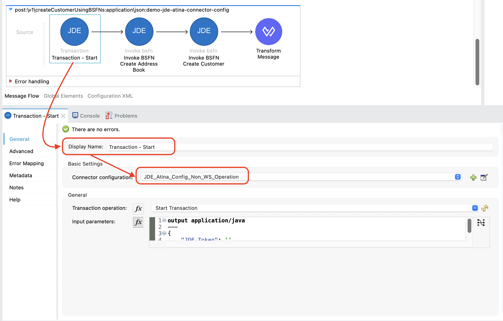
3. Set the Input Parameters for Transaction operation
You can now configure the input parameters using DataWeave or the graphical mapping interface.
Click the fx icon next to Input parameters, and use either:
-
Manual expression:
{ } -
Or graphical mapping: drag
attributes.queryParams.entityIDtomnAddressBookNumber.
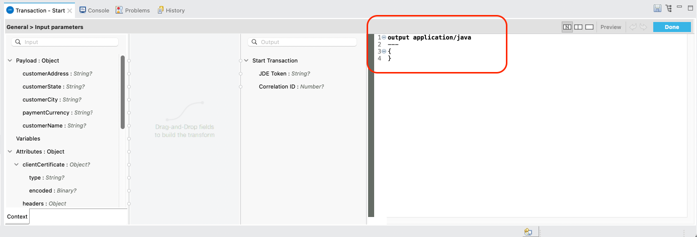
Assing the payload to a variable
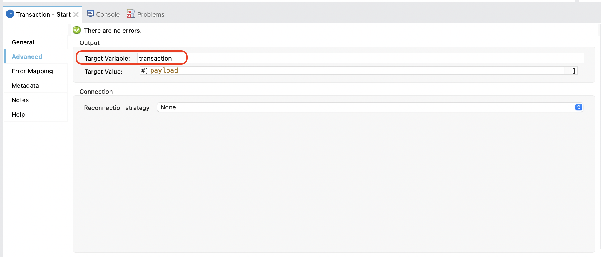
4. Assign the transaction ID to BSFNs
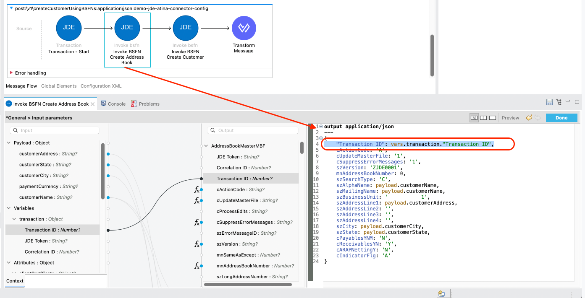
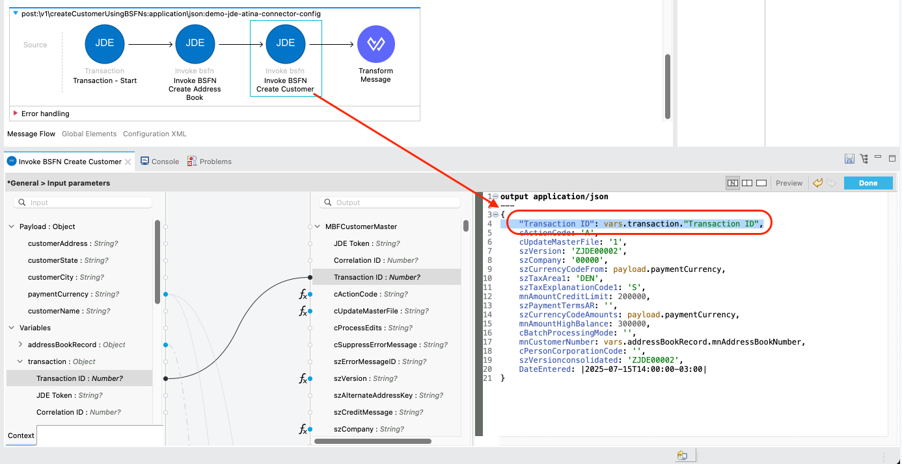
5. Close Transaction with Commit and Rollback
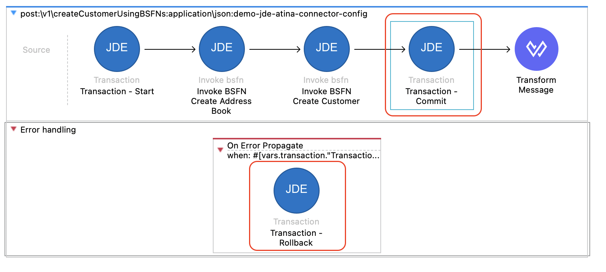
Commit Transaction
<jdeatina:transaction transactionOperation="Commit Transaction" doc:name="Transaction - Commit" config-ref="JDE_Atina_Config_Non_WS_Operation" target="commit">
<jdeatina:input-parameters ><![CDATA[#[output application/java
---
{
"Transaction ID": vars.transaction."Transaction ID"
}]]]></jdeatina:input-parameters>
</jdeatina:transaction>Rollback Transaction
<error-handler >
<on-error-propagate enableNotifications="true" logException="true" doc:name="On Error Propagate"
when='#[vars.transaction."Transaction ID" != 0]'>
<jdeatina:transaction transactionOperation="Rollback Transaction" doc:name="Transaction - Rollback" doc:id="9dea4c9a-1158-4de6-bd52-b427cf2f244e" config-ref="JDE_Atina_Config_Non_WS_Operation" target="commit" >
<jdeatina:input-parameters ><![CDATA[#[output application/java
---
{
"Transaction ID": vars.transaction."Transaction ID"
}]]]></jdeatina:input-parameters>
</jdeatina:transaction>
</on-error-propagate>
</error-handler>6. Run and Test the Flow
Start your Mule application using the Run button or Run → Run Project.
Once deployed, you can test the endpoint using the API Console or an HTTP client such as curl or Postman.
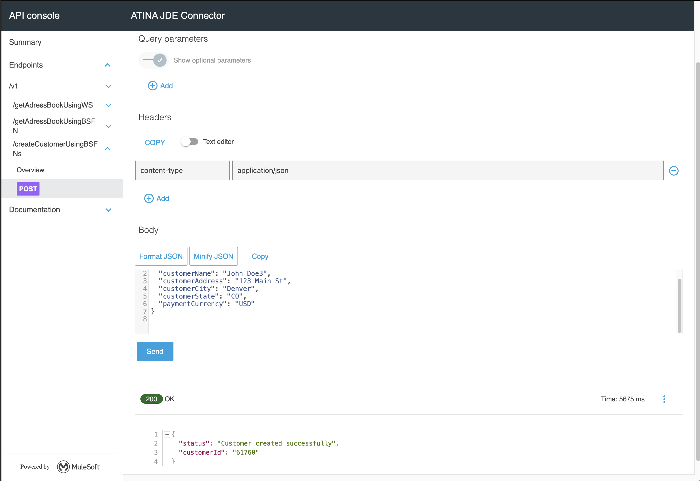
You should receive a 200 OK response with the JSON format.
|
Note
|
The BSFN operation is executed dynamically by the microservice. If the service is not available or misconfigured, you will receive a |
Submit an UBE and an UBE State
Just like with Web Services, we start from a RAML contract to generate a MuleSoft endpoint that submits UBEs.
In this example, we will invoke R01010Z-ZJDE0001 (Address Book Batch Upload).
RAML Definition
#%RAML 1.0
title: ATINA JDE Connector
version: v1
/v1:
...
/submitUBER01010Z:
post:
description: Sumbit UBE R01010Z-ZJDE0001 Address Book Batch Upload.
body:
application/json:
type: |
{
"type": "object",
"properties": {
"PO_ProcessMode": {
"type": "string",
"pattern": "^[0,1]{1}$",
"displayName": "Process Mode",
"description": "Blank = Proof mode or 1 = Final mode"
},
"DataSelection_EDUS": {
"type": "string",
"displayName": "EDUS User Transaction"
}
}
}
example: |
{
"PO_ProcessMode": "0",
"DataSelection_EDUS": "JDE"
}
responses:
200:
description: OK
body:
application/json:
example: |
{
"status": "UBE Submited",
"jobId": "12345"
}Based on this RAML, the following endpoint will be exposed:
POST /v1/submitUBER01010Z
{
"PO_ProcessMode": "0",
"DataSelection_EDUS": "JDE"
}Configure the UBE Invocation
Follow the initial steps described in Creating an HTTP Listener from RAML to generate the Mule Flow.
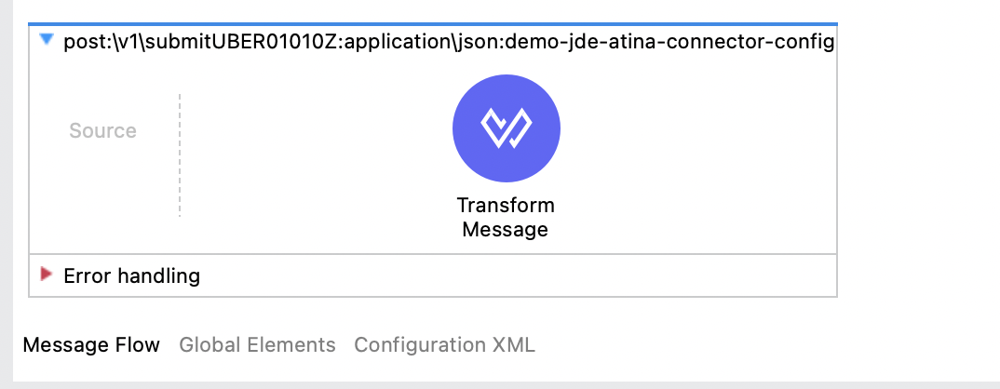
To invoke a JDE UBE using the Atina JDE Connector:
1. Add the Submit batch process Operation
From the Mule Palette, drag the Submit batch process operation from the JDE Atina module into the flow.
-
Set a meaningful Display Name, e.g., Submit Batch Upload.
-
Under Basic Settings, choose the proper connector configuration (e.g., JDE_Atina_Config_Non_WS_Operation).
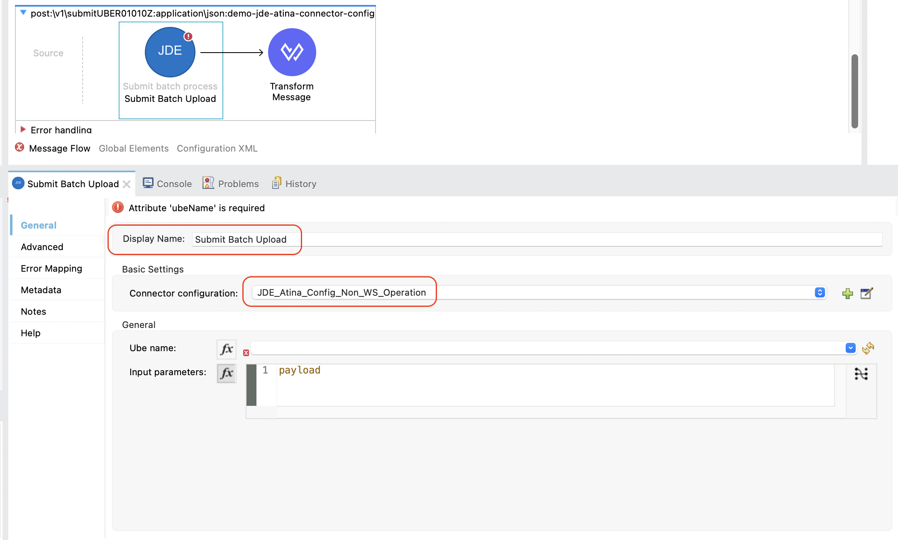
2. Set the UBE Name and Version
In the General section, fill in the UBE Name and Version:
-
UBE Name: R01010Z
-
UBE Version: ZJDE0001
This metadata is retrieved from the running microserver and cached in your project.
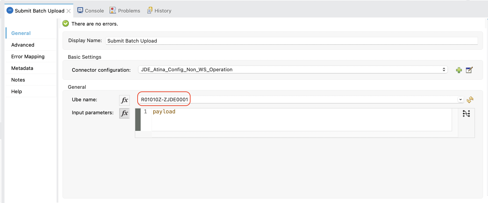
This metadata is fetched directly from the running microserver instance and stored in your project metadata.
3. Set the Input Parameters
You can now configure the input parameters using DataWeave or the graphical mapping interface.
Optional fields like Processing Options and Report Interconnect can override specific runtime values without affecting the entire version configuration.
For reference on how to construct the Data Selection, see Appendix A - Defining Data Selection.
Click the fx icon next to Input parameters, and use either:
-
Manual expression:
{ "Processing Options": { cProofFinalFlag: payload.PO_ProcessMode }, "Data Selection": "F0101Z2.EDUS = '" ++ (payload.DataSelection_EDUS as String) ++ "' AND F0101Z2.EDTN>'001'" } -
Or graphical mapping: drag
attributes.queryParams.entityIDtomnAddressBookNumber.
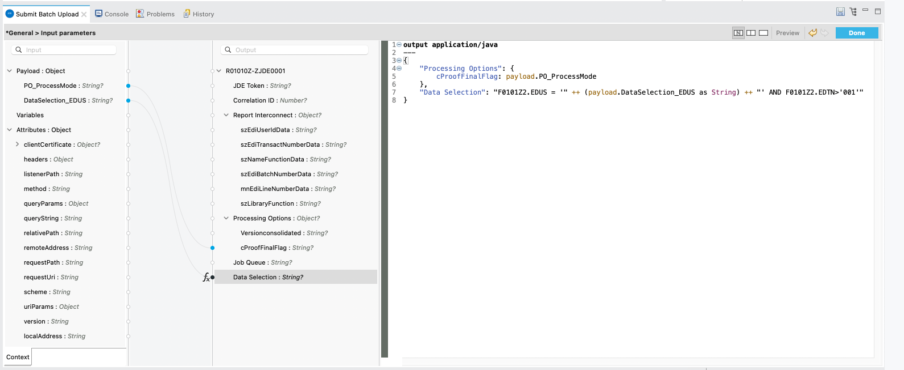
Assign the response to a variable (e.g., vars.ubeSubmited).
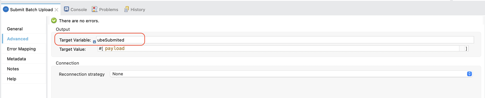
4. Add the Get batch process information Operation
From the Mule Palette, locate the JDE Atina module and drag the Get batch process information operation onto the flow canvas.
Once the operation is placed, select it and review the configuration panel on the right.
-
Change the Display Name to something meaningful, such as
Get Batch Status. -
In the Basic Settings, select the appropriate connector configuration (e.g.
JDE_Atina_Config_Non_WS_Operation).
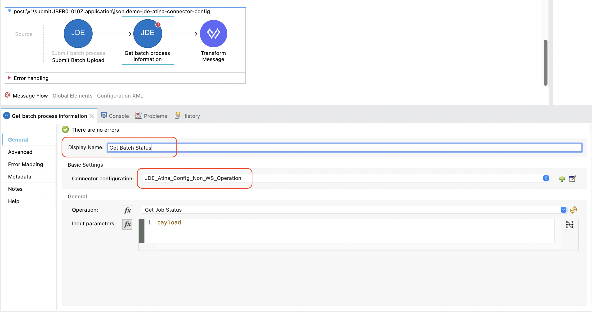
5. Provide the Job ID Parameter
This operation requires the JOB Number as input.
You can now configure the input parameters using DataWeave or the graphical mapping interface.
Click the fx icon next to Input parameters, and use either:
-
Manual expression:
output application/java --- { "JOB Number": vars.ubeSubmited."JOB Number" as String } -
Or graphical mapping: drag
attributes.queryParams.entityIDtomnAddressBookNumber.
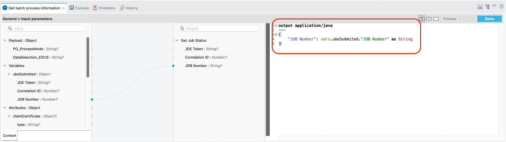
Assing the response to a variable
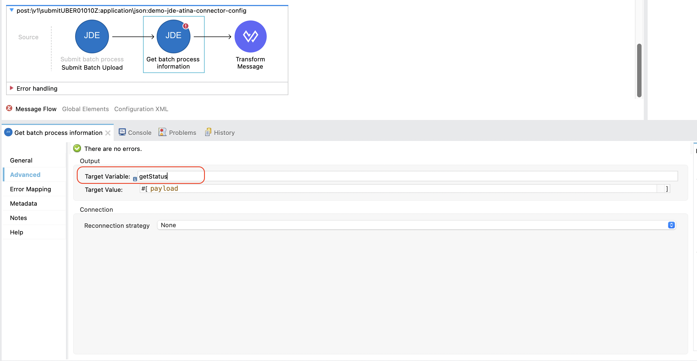
6. Add a Transform Message
After receiving the batch status response, you may want to format the output.
From the Mule Palette, search for Transform Message and drag it next to the connector.
This will allow you to format the output as needed, such as converting it to application/json.
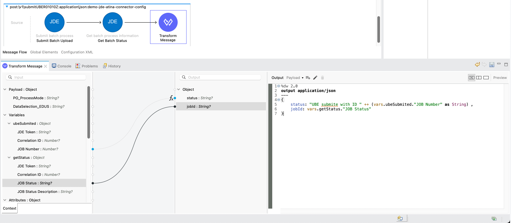
Here is a sample transformation using DataWeave:
%dw 2.0
output application/json
---
{
status: "UBE submite with ID " ++ (vars.ubeSubmited."JOB Number" as String) ,
jobId: vars.getStatus."JOB Status"
}7. Run and Test the Flow
Start your Mule application using the Run button or Run → Run Project.
Once deployed, you can test the endpoint using the API Console or an HTTP client such as curl or Postman.
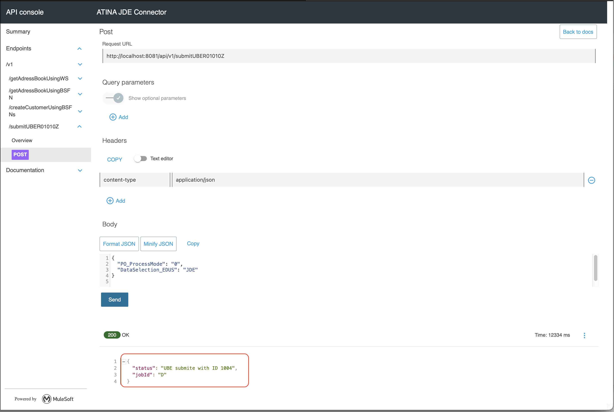
You should receive a 200 OK response with the JSON format.
8 Sample Output in JDE
These images show how the submitted UBE appears in JDE, including job logs and status:
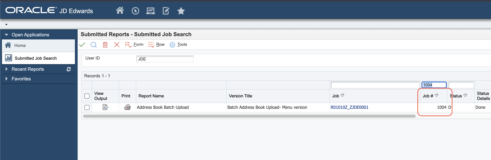
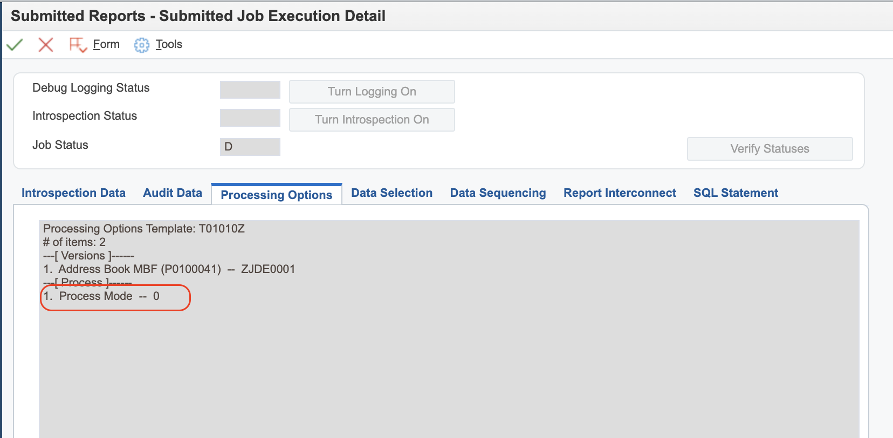
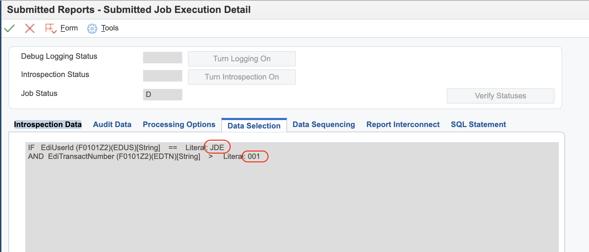
Capture MBF Outbound Events
Capture MBF Outbound Events
This use case demonstrates how to create a simple Mule flow to retrieve outbound events generated by an application that uses a Master Business Function (MBF) to trigger events.
JDE Outbound Transactions require the configuration of a Processing Option that specifies the transaction type. Additionally, some entry-point programs allow you to define a specific version of the Master Business Function Processing Options program, which in turn allows you to configure a version of the Interoperability Processing Options program.
The following example shows how to capture Customer Master records created through application P03013 (Work With Customer Master).
For information on how to configure outbound events in JD Edwards, refer to the section JDEdwards Events Configuration under Appendix B: JDE Configuration.
To simplify testing, we will expose the flow via an HTTP endpoint rather than using a scheduled poller, allowing results to be easily displayed in the console.
RAML Definition
#%RAML 1.0
title: ATINA JDE Connector
version: v1
/v1:
...
/getCustomerCreated:
get:
description: Get Gustomer using outbound events.
queryParameters:
qtyRecords:
displayName: Qty Records to poll (Max. 100)
type: number
required: true
responses:
200:
description: OK
body:
application/json:
example: |
{
}Based on this RAML, the following endpoint will be exposed:
GET /v1/getCustomerCreated?qtyRecords=1This request will retrieve up to 1 outbound customer record created through MBF processing.
RAML Definition
#%RAML 1.0
title: ATINA JDE Connector
version: v1
/v1:
...
/getCustomerCreated:
get:
description: Get Gustomer using outbound events.
queryParameters:
qtyRecords:
displayName: Qty Records to poll (Max. 100)
type: number
required: true
responses:
200:
description: OK
body:
application/json:
example: |
{
}Based on this RAML, the following endpoint will be exposed:
GET /v1/getCustomerCreated?qtyRecords=1Configure the Poll Events
To invoke the Poll Events in your Mule flow, follow the same initial steps explained in the section Creating a HTTP Listener from RAML.
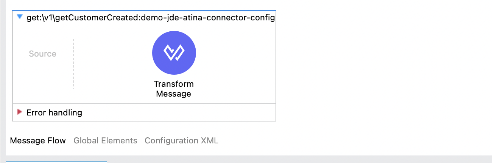
To poll events using the Atina JDE Connector, follow the steps below:
1. Add the Connector to the Flow
From the Mule Palette, locate the JDE Atina module and drag the Poll events operation onto the flow canvas.
Once the operation is placed, select it and review the configuration panel on the right.
-
Change the Display Name to something meaningful, such as
Get Customers Created. -
In the Basic Settings, select the appropriate connector configuration (e.g.
JDE_Atina_Config_Non_WS_Operation).
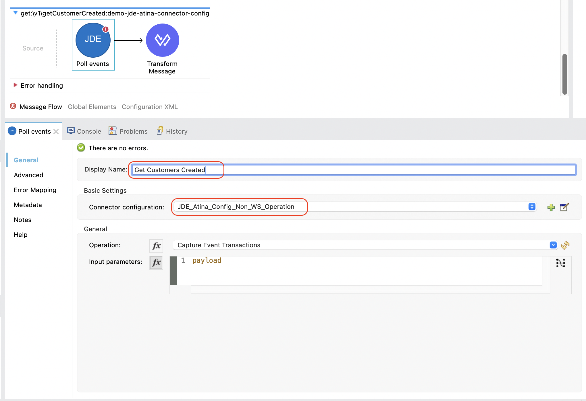
2. Set the Input Parameters
You can now configure the input parameters using DataWeave or the graphical mapping interface.
Click the fx icon next to Input parameters, and use either:
-
Manual expression:
{ "Transaction Code": 'JDECM', "Last Batch Number (EDBT)": '', "Max Qty Transactions to Read": attributes.queryParams.qtyRecords, "Lock Events": 'N', "Update Events": 'N', "Match Interop Line Number": false } -
Or graphical mapping: drag
attributes.queryParams.entityIDtomnAddressBookNumber.
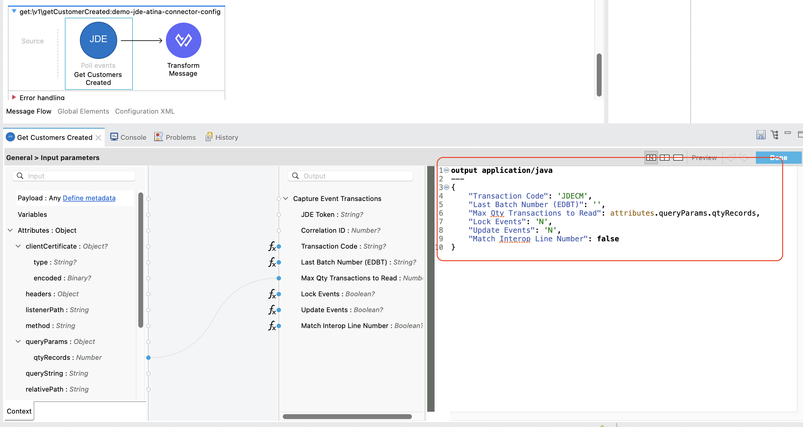
3. Add a Transform Message (Optional)
After the poll event invocation, you can format the response.
From the Mule Palette, search for Transform Message and drag it next to the connector.
This will allow you to format the output as needed, such as converting it to application/json.
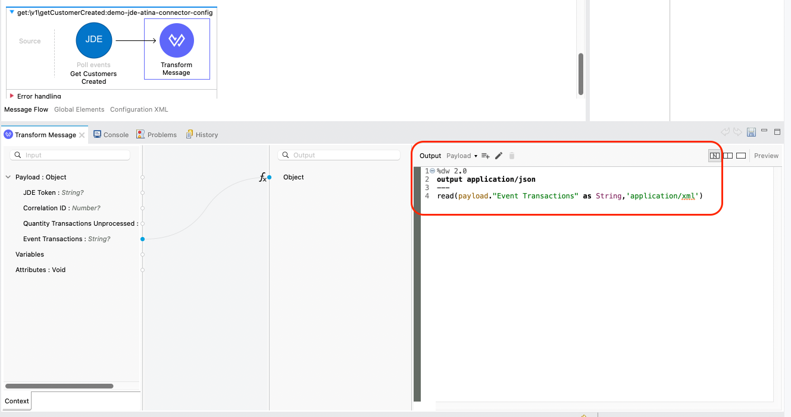
Typical output for passthrough:
%dw 2.0
output application/json
---
read(payload."Event Transactions" as String,'application/xml')4. Run and Test the Flow
Start your Mule application using the Run button or Run → Run Project.
Once deployed, you can test the endpoint using the API Console or an HTTP client such as curl or Postman.
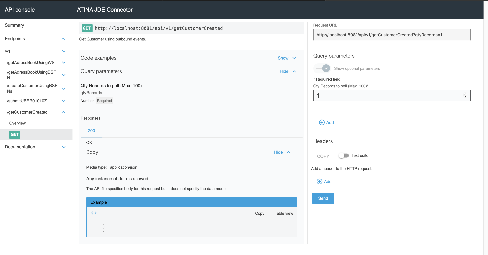
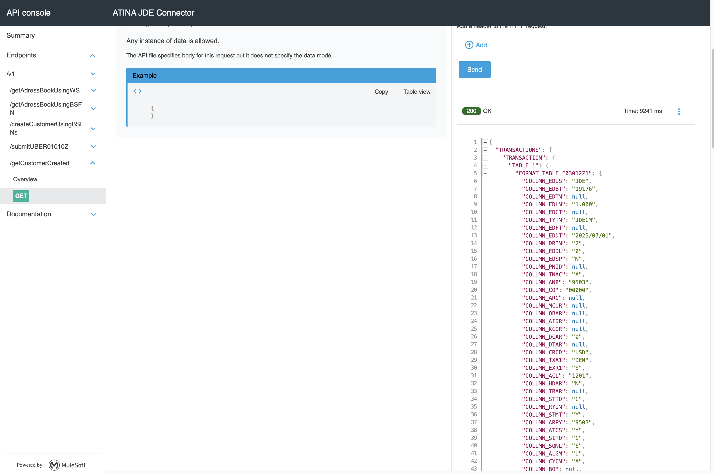
You should receive a 200 OK response with the JSON format.
|
Note
|
The Get Poll operation is executed dynamically by the microservice. If the service is not available or misconfigured, you will receive a |
Atina JDE Connector_ – Demo Applications
Example Project
You can download the example source that was created in the Getting Started Guide from
Additional Demos
There are additional demo applications with step by step guides available for download. These cover all the basic operations, and are :
Appendix A : Additional Information
Defining Data Selection
The Selection parameter is used to define the Data Selection criteria for a UBE (Universal Batch Engine).
This expression follows a syntax similar to the WHERE clause in SQL statements.
Syntax
The general structure is:
table.column_name operator [value | table.column_name]-
table: Must be a valid JDE table name that belongs to the main view of the UBE.
-
column_name: Must be a JDE Data Item Alias (not the physical database column name).
-
value: Can be a string or number literal, or another column.
Supported Operators
| Operator | Description |
|---|---|
= |
Equal |
<> |
Not equal |
<> |
Not equal |
> |
Greater than |
< |
Less than |
>= |
Greater than or equal |
⇐ |
Less than or equal |
BETWEEN |
Between an inclusive range |
NOT BETWEEN |
Not Between an exclusive range |
IN |
To specify multiple possible values for a column |
NOT IN |
To exclude multiple possible values for a column |
Additional Rules
-
The values can be literals or other table columns.
-
Literals can be String or Number
-
You may combine conditions using AND and OR.
-
To override the default precedence you need to use parenthesis as
-
C1 AND (C2 OR C3)
-
Use parentheses to override operator precedence, but only one level of nesting is allowed.
-
For example, this is a valid sentence because the maximum level of Parenthesis opened is 1.
_C1 AND (C2 OR C3) AND (C4 OR C5)_otherwise, this is an invalid sentences because the maximum level of Parenthesis opened is 2.
C1 AND (C2 OR (C3 AND C4))Examples
F4211.KCOO = '00001' AND F4211.DOCO > 10332
F4211.KCOO = '00001' AND F4211.DOCO >= 10332
F4211.KCOO = '00001' AND F4211.DOCO <= 10332
F4211.KCOO = '00001' AND F4211.DOCO <> 10332
F4211.KCOO = '00001' AND ( F4211.DCTO = 'SO' OR F4211.DCTO = 'SI' )
F4211.KCOO = '00001' AND F4211.DCTO IN ('SO','SI')
F4211.KCOO = '00001' AND F4211.DCTO NOT IN ('SO','SI')
F4211.KCOO = '00001' AND F4211.DOCO BETWEEN 1022 AND 400
F4211.KCOO = '00001' AND F4211.DOCO NOT BETWEEN 1022 AND 400
F4211.MCU = F4211.EMCU AND F4211.DOCO NOT BETWEEN 1022 AND 400|
Note
|
The parser for Selection enforces these constraints at runtime. If a sentence is invalid, you will receive an error from the JDE microservice. |
Appendix B: JDE Configuration
JDEdwards Events configuration
To enable JDE Outbound Transactions, you must configure Processing Options that specify the transaction type. In addition, certain entry programs allow you to assign a version of the Master Business Function (MBF) Processing Options program, which itself enables a version of the Interoperability Processing Options.
This configuration is required, for example, to capture customers entered through the Customer Master (P03013) application.
Follow the steps below to enable outbound interoperability:
1. Configure 'Customer Master MBF - PO' (P0100042)
Set up the version of the Customer Master MBF that includes outbound processing.
In the Outbound tab, ensure that the Transaction Type is set (e.g., JDECM).
This enables outbound interoperability for Customer Master transactions.
2. Configure 'Customer Master' (P03013)
Next, assign the MBF version to be used when the Customer Master application runs.
In the Versions tab, set the version of the MBF that was configured in the previous step (e.g., ZJDE0002).
This ensures the application will trigger the proper outbound process when adding a customer.
3. Configure 'Flat File Cross-Reference' (P47002)
Finally, inform JD Edwards which table is used to store outbound transactions.
Using the Flat File Cross-Reference (P47002) program, add a record indicating the transaction type and corresponding table. Using Flat File Cross-Reference (P47002) form Work With Flat File Cross-Reference adds the following record:
This tells the connector where to poll outbound events for the selected transaction (e.g., table F03012Z1 for JDECM).
|
Note
|
For more outbound interoperability alternatives, refer to the official guide: JD Edwards EnterpriseOne Applications Interoperability Fundamentals Implementation Guide |